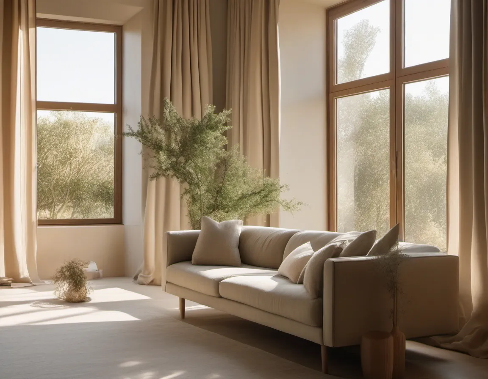

Acristalamiento a medida
El cristal adecuado para cada ventana
Más aislamiento, menos ruido y más luz. Fabricamos el cristal de tus ventanas a medida, sea cual sea su tamaño.
Tipos de cristal
Un acristalamiento para cada necesidad
Te ayudamos a elegir según el uso, la orientación y el tamaño de la ventana.
- 01Doble acristalamiento
Cámara de aire que aísla del frío y del calor.
- 02Bajo emisivo
Retiene el calor en casa y reduce la factura.
- 03Acústico
Para calles con tráfico o zonas ruidosas.
- 04Seguridad (laminado)
No se desprende al romperse. Ideal en bajos.
- 05Grandes formatos
Ventanales y correderas de gran tamaño.
Cómo elegir
Tu ventana nueva en tres pasos
I
Dinos la medida
Alto y ancho del hueco, o vamos nosotros a medir.
II
Elige qué necesitas
Aislamiento, silencio, seguridad o tamaño grande.
III
Lo fabricamos
Cortado a medida y listo para instalar.
Ventajas
Por qué cambiar el cristal de tus ventanas
- Ahorro en calefacción y aire acondicionado
- Casa más silenciosa
- Menos condensación en invierno
- Más seguridad para tu familia

Nuestra misión
Ayudar a cada cliente a elegir el cristal que de verdad necesita, sin tecnicismos y con un presupuesto claro desde el principio.
Dónde encontrarnos
Ven a ver las muestras
DirecciónC/ del Vidrio, 14 · Polígono de Roces
33211 Gijón, Asturias
33211 Gijón, Asturias
HorarioL–V: 8:00–14:00 y 15:30–19:00
Sábados: 9:00–13:00
Sábados: 9:00–13:00
Contacto985 000 000 · hola@cristalestutorales.es